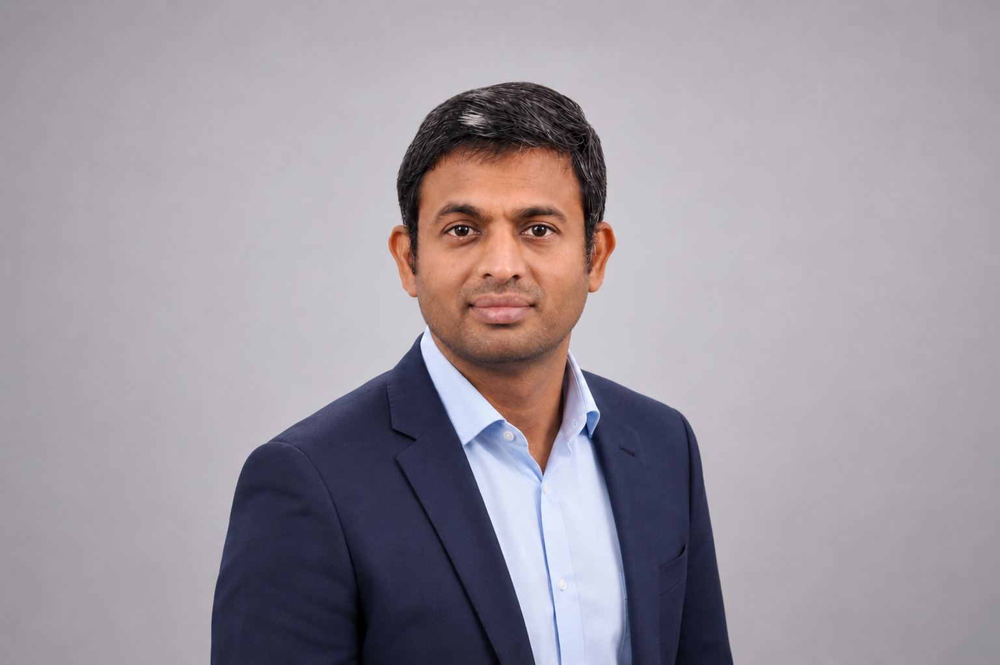

Principle / 01
Builds systems that outshine and outlast presence
Quality systems, certifications, trained teams, and operating disciplines that keep delivering after the leader has moved on.
Quality & Operational Excellence leadership driving sustainable business transformation across aerospace, defence, automotive, and engineering services.

A 15-year career in Indian Naval Aviation followed by 13 years in corporate quality and operational excellence leadership — operating across aerospace MRO, simulator and avionics integration, global tech operations, and engineering services. The principles below are how the work gets done, and they have stayed consistent from the flight line to the boardroom.
Quality systems, certifications, trained teams, and operating disciplines that keep delivering after the leader has moved on.
Carries fifteen years of hands-on aviation maintenance experience into design, programme and review conversations — catching what specifications alone do not.
Repurposes existing assets, databases and workflows into new value — from supplier databases as sales feeds to internal newsletters as project pipelines.
Advocates for team welfare and development before personal advancement; routes credit to leaders and mentors who enabled the work.
Sustained, evidence-anchored delivery over self-promotion. External auditors, OEM customers, and senior leadership feedback document the standard.
Reads organisational signals early, completes commitments, lands the next position before departure — across the Navy, HALBIT, Sika, and Amazon transitions.
Leading Business Excellence, Quality Governance and Transformation across the Automotive & Mobility BU. Transitioning into the Avionics quality function from July 2026 to build EASA Part 21 design and production organisation experience.
AL2 assessments across Bengaluru, Hyderabad and Pune — including a technical-equivalency argument using an in-flight aerospace ISMS audit to satisfy automotive cybersecurity assessment.Risk Manager II at Level 5 (re-titled Program Manager II under Amazon's program-function consolidation). Supported global WHS operations across NA, EU and ROW within a 152-member CPT.
Joined as Employee #001 of the India–UK aerospace MRO joint venture, mandated to establish landing gear, hydraulics and flight controls operations in India mirroring the UK parent. Form 4 Quality Manager approved by both EASA and DGCA.
First corporate Quality Manager and Management Representative of the HAL — Elbit Systems joint venture, reporting directly to the CEO. Additionally took on Technical Manager role for the Environmental Stress Screening Laboratory.
15 years in Indian Naval Aviation across operational squadron maintenance, regional quality assurance, and developmental aerospace programme office work. Selected as 1 of 2 from 1,500 candidates at INS Adyar Chennai recruitment. Operational specialisation on Dornier 228 / Garrett TPE331; theoretical training across Sea Harrier, Harrier, Kiran and Alouette platforms. Progressed from Aircraft Artificer 5th Class to confirmed Chief Aircraft Artificer.
Member of the Aeronautical Development Agency programme office team supporting India's first indigenous carrier-capable fighter prototype. Daily, weekly and monthly programme dossiers prepared for ADA leadership and IHQ Indian Navy; multi-agency communications managed across Indian Navy, ADA, Goa Shipyard, CCRDE and Rosoboronexport for SBTF integration; institutional responses drafted to CAG audit observations and Indian Express programme-defence articles. Part of the team on the flightline on 27 April 2012.
During a routine walk-around in the assembly area, observed dents forming on a 42-46 HRC load beam during pre-release testing on the second lot of HAL Helicopter Division cargo hooks. Escalated to senior leadership against delivery deadline pressure; insisted on written commitment to recall and investigate. In-house and external NABL hardness testing confirmed actual hardness at 22-26 HRC. Root cause traced to a heat-treatment cycle deviation. Affected lot rejected before deployment to operational helicopters.
Self-initiated predictive analytics work using Classification and Regression Trees (CART) methodology in Minitab. Identified the operational thresholds — Units Per Hour and Throughput Per Hour — at which injury incidence spiked in Amazon fulfilment operations. Model adopted by one BU to transform onsite nurse cart movement from static scheduling to tempo-triggered repositioning during the highest-risk windows of operating tempo.
Cyient's first ASPICE Capability Level 3 certification (PAM 3.0, formal assessment January 2026), delivered on the CNH Perception System programme. Built without customer-driven certification pull. ~180 pre-assessment findings closed across the October 2025 to January 2026 window. Tooling deployed in Azure DevOps with Modern Requirements plugin and self-enforcing workflow rule-sets. Currently leading procedures revamp to PAM 4.0.
For leadership roles, advisory engagements, or aerospace and quality programme collaboration.